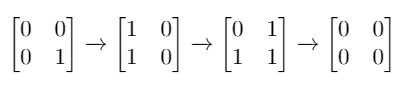

| Category | Difficulty | Likes | Dislikes |
|---|---|---|---|
| Algorithms | Hard | 1001 | 103 |
array | hash-table | bit-manipulation | breadth-first-search | matrix
airbnb
Given a m x n binary matrix mat. In one step, you can choose one cell and flip it and all the four neighbors of it if they exist (Flip is changing 1 to 0 and 0 to 1). A pair of cells are called neighbors if they share one edge.
Return the minimum number of steps required to convert mat to a zero matrix or -1 if you cannot.
A binary matrix is a matrix with all cells equal to 0 or 1 only.
A zero matrix is a matrix with all cells equal to 0.
Example 1:

Input: mat = [[0,0],[0,1]]
Output: 3
Explanation: One possible solution is to flip (1, 0) then (0, 1) and finally (1, 1) as shown.Example 2:
Input: mat = [[0]]
Output: 0
Explanation: Given matrix is a zero matrix. We do not need to change it.Example 3:
Input: mat = [[1,0,0],[1,0,0]]
Output: -1
Explanation: Given matrix cannot be a zero matrix.
Constraints:
m == mat.lengthn == mat[i].length1 <= m, n <= 3mat[i][j] is either 0 or 1.